Chromosomal Alterations. Chromosomal alterations are major changes in the genetic material.
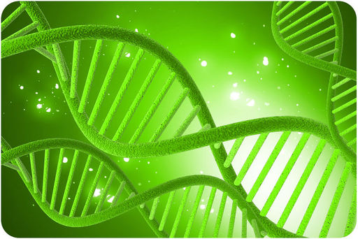
The spiral structure in the picture is a large organic molecule. Can you guess what it is? Here’s a hint: molecules like this one determine who you are. They contain genetic information that controls your characteristics. They determine your eye color, facial features, and other physical attributes. What molecule is it?
You probably answered “DNA.” Today, it is commonly known that DNA is the genetic material. For a long time, scientists knew such molecules existed. They were aware that genetic information was contained within organic molecules. However, they didn’t know which type of molecules play this role. In fact, for many decades, scientists thought that proteins were the molecules that carry genetic information. In this chapter, you will learn how scientists discovered that DNA carries the code of life.
Your DNA, or deoxyribonucleic acid, contains the genes that determine who you are. How can this organic molecule control your characteristics? DNA contains instructions for all the proteins your body makes. Proteins, in turn, determine the structure and function of all your cells. What determines a protein’s structure? It begins with the sequence of amino acids that make up the protein. Instructions for making proteins with the correct sequence of amino acids are encoded in DNA.
The vocabulary of DNA: chromosomes, chromatids, chromatin, transcription, translation, and replication is discussed at http://www.youtube.com/user/khanacademy#p/c/7A9646BC5110CF64/6/s9HPNwXd9fk (18:23).
Click on the image above for more content
DNA is found in chromosomes. In eukaryotic cells, chromosomes always remain in the nucleus, but proteins are made at ribosomes in the cytoplasm. How do the instructions in DNA get to the site of protein synthesis outside the nucleus? Another type of nucleic acid is responsible. This nucleic acid is RNA, or ribonucleic acid. RNA is a small molecule that can squeeze through pores in the nuclear membrane. It carries the information from DNA in the nucleus to a ribosome in the cytoplasm and then helps assemble the protein. In short:
DNA → RNA → Protein
Discovering this sequence of events was a major milestone in molecular biology. It is called the central dogma of molecular biology . You can watch a video about the central dogma and other concepts in this lesson at this link: http://www.youtube.com/watch?v=ZjRCmU0_dhY&feature=fvw (8:07). An overview of protein synthesis can be viewed at http://www.youtube.com/watch?v=-ygpqVr7_xs&feature=related (10:46).
DNA is the genetic material in your cells. It was passed on to you from your parents and determines your characteristics. The discovery that DNA is the genetic material was another important milestone in molecular biology.
Many scientists contributed to the identification of DNA as the genetic material. In the 1920s, Frederick Griffith made an important discovery. He was studying two different strains of a bacterium, called R (rough) strain and S (smooth) strain. He injected the two strains into mice. The S strain killed (virulent) the mice, but the R strain did not (nonvirulent) (see Figure below ). Griffith also injected mice with S-strain bacteria that had been killed by heat. As expected, the killed bacteria did not harm the mice. However, when the dead S-strain bacteria were mixed with live R-strain bacteria and injected, the mice died.
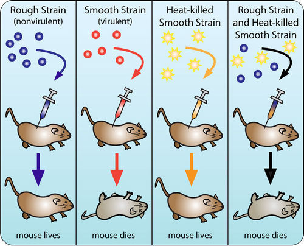
Griffith’s Experimental Results. Griffith showed that a substance could be transferred to harmless bacteria and make them deadly.
Based on his observations, Griffith deduced that something in the killed S-strain was transferred to the previously harmless R-strain, making the R-strain deadly. What was that something? What type of substance could change the characteristics of the organism that received it?
In the early 1940s, a team of scientists led by Oswald Avery tried to answer the question raised by Griffith’s results. They inactivated various substances in the S-strain bacteria. They then killed the S-strain bacteria and mixed the remains with live R-strain bacteria. (Keep in mind, the R-strain bacteria usually did not harm the mice.) When they inactivated proteins, the R-strain was deadly to the injected mice. This ruled out proteins as the genetic material. Why? Even without the S-strain proteins, the R-strain was changed, or transformed, into the deadly strain. However, when the researchers inactivated DNA in the S-strain, the R-strain remained harmless. This led to the conclusion that DNA is the substance that controls the characteristics of organisms. In other words, DNA is the genetic material. You can watch an animation about the research of both Griffith and Avery at this link: http://www.dnalc.org/view/16375-Animation-17-A-gene-is-made-of-DNA-.html .
The conclusion that DNA is the genetic material was not widely accepted at first. It had to be confirmed by other research. In the 1950s, Alfred Hershey and Martha Chase did experiments with viruses and bacteria. Viruses are not cells. They are basically DNA inside a protein coat. To reproduce, a virus must insert its own genetic material into a cell (such as a bacterium). Then it uses the cell’s machinery to make more viruses. The researchers used different radioactive elements to label the DNA and proteins in viruses. This allowed them to identify which molecule the viruses inserted into bacteria. DNA was the molecule they identified. This confirmed that DNA is the genetic material.
Other important discoveries about DNA were made in the mid-1900s by Erwin Chargaff. He studied DNA from many different species. He was especially interested in the four different nitrogen bases of DNA: adenine (A), guanine (G), cytosine (C), and thymine (T) (see Figure below ). Chargaff found that concentrations of the four bases differed from one species to another. However, within each species, the concentration of adenine was always about the same as the concentration of thymine. The same was true of the concentrations of guanine and cytosine. These observations came to be known as Chargaff’s rules . The significance of the rules would not be revealed until the structure of DNA was discovered.
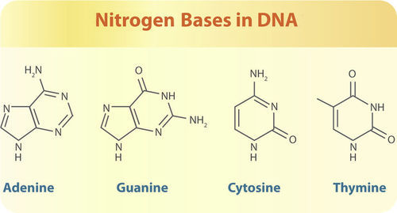
Nitrogen Bases in DNA. The DNA of all species has the same four nitrogen bases.
After DNA was found to be the genetic material, scientists wanted to learn more about it. James Watson and Francis Crick are usually given credit for discovering that DNA has a double helix shape, like a spiral staircase (see Figure below ). The discovery was based on the prior work of Rosalind Franklin and other scientists, who had used X rays to learn more about DNA’s structure. Franklin and these other scientists have not always been given credit for their contributions. You can learn more about Franklin’s work by watching the video at this link: http://www.youtube.com/watch?v=s3whouvZYG8 (7:47).
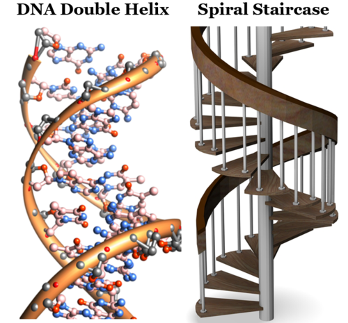
The DNA molecule has a double helix shape. This is the same basic shape as a spiral staircase. Do you see the resemblance? Which parts of the DNA molecule are like the steps of the spiral staircase?
The double helix shape of DNA, together with Chargaff’s rules, led to a better understanding of DNA. DNA, as a nucleic acid, is made from nucleotide monomers, and the DNA double helix consists of two polynucleotide chains. Each nucleotide consists of a sugar (deoxyribose), a phosphate group, and a nitrogen-containing base (A, C, G, or T). The sugar-phosphate backbone of the double helix was discussed in the Chemistry of Life chapter.
Scientists concluded that bonds (hydrogen bonds) between complementary bases hold together the two polynucleotide chains of DNA. Adenine always bonds with its complementary base, thymine. Cytosine always bonds with its complementary base, guanine. If you look at the nitrogen bases in Figure above , you will see why. Adenine and guanine have a two-ring structure. Cytosine and thymine have just one ring. If adenine were to bind with guanine and cytosine with thymine, the distance between the two DNA chains would be variable. However, when a one-ring molecule binds with a two-ring molecule, the distance between the two chains is kept constant. This maintains the uniform shape of the DNA double helix. These base pairs (A-T or G-C) stick into the middle of the double helix, forming, in essence, the steps of the spiral staircase.
Knowledge of DNA’s structure helped scientists understand how DNA replicates. DNA replication is the process in which DNA is copied. It occurs during the synthesis (S) phase of the eukaryotic cell cycle. DNA replication begins when an enzyme breaks the bonds between complementary bases in DNA (see Figure below ). This exposes the bases inside the molecule so they can be “read” by another enzyme and used to build two new DNA strands with complementary bases. The two daughter molecules that result each contain one strand from the parent molecule and one new strand that is complementary to it. As a result, the two daughter molecules are both identical to the parent molecule. The process of DNA replication is actually much more complex than this simple summary. You can see a detailed animation of the process at this link: http://www.youtube.com/watch?v=-mtLXpgjHL0&NR=1 (2:05).
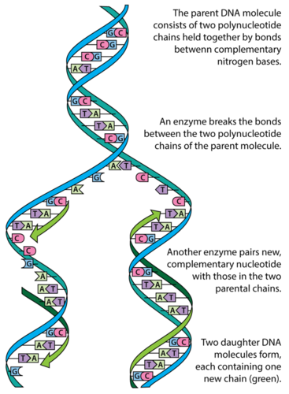
DNA Replication. DNA replication is a semi-conservative process. Half of the parent DNA molecule is conserved in each of the two daughter DNA molecules.
DNA alone cannot “tell” your cells how to make proteins. It needs the help of RNA, the other main player in the central dogma of molecular biology. Remember, DNA "lives" in the nucleus, but proteins are made on the ribosomes in the cytoplasm. How does the genetic information get from the nucleus to the cytoplasm? RNA is the answer.
RNA, like DNA, is a nucleic acid. However, RNA differs from DNA in several ways. In addition to being smaller than DNA, RNA also
There are three main types of RNA, all of which are involved in making proteins.
In the next lesson, you can read in detail how these three types of RNA help cells make proteins.
1. State the central dogma of molecular biology.
2. Outline research that determined that DNA is the genetic material.
3. What are Chargaff’s rules?
4. Identify the structure of the DNA molecule.
5. Why is DNA replication said to be semi-conservative?
6. Create a diagram that shows how DNA replication occurs.
7. Explain why complementary base pairing is necessary to maintain the double helix shape of the DNA molecule.
8. Compare and contrast DNA and RNA.
All three types of RNA are needed by cells to make proteins.
The process in which cells make proteins is called protein synthesis . It actually consists of two processes: transcription and translation. Transcription takes place in the nucleus. It uses DNA as a template to make an RNA molecule. RNA then leaves the nucleus and goes to a ribosome in the cytoplasm, where translation occurs. Translation reads the genetic code in mRNA and makes a protein.
Transcription is the first part of the central dogma of molecular biology: DNA → RNA . It is the transfer of genetic instructions in DNA to mRNA. During transcription, a strand of mRNA is made that is complementary to a strand of DNA. Figure below shows how this occurs. You can watch an animation of the process at this link: http://www.biostudio.com/d_%20Transcription.htm .
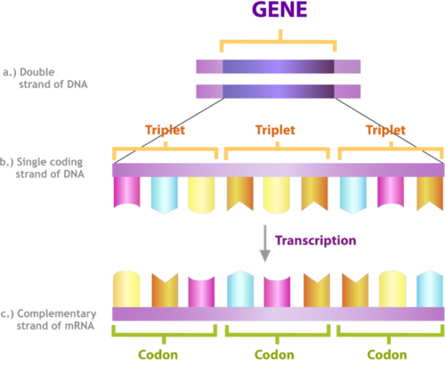
Overview of Transcription. Transcription uses the sequence of bases in a strand of DNA to make a complementary strand of mRNA. Triplets are groups of three successive nucleotide bases in DNA. Codons are complementary groups of bases in mRNA.
Transcription takes place in three steps: initiation, elongation, and termination. The steps are illustrated in Figure below .
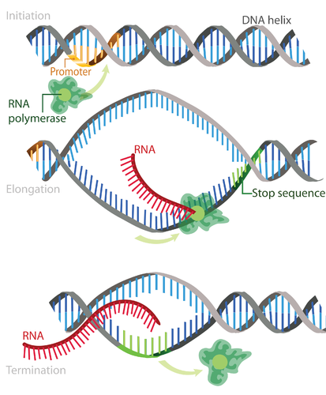
Steps of Transcription. Transcription occurs in the three steps - initiation, elongation, and termination - shown here.
In eukaryotes, the new mRNA is not yet ready for translation. It must go through more processing before it leaves the nucleus. This may include splicing, editing, and polyadenylation. These processes modify the mRNA in various ways. Such modifications allow a single gene to be used to make more than one protein.
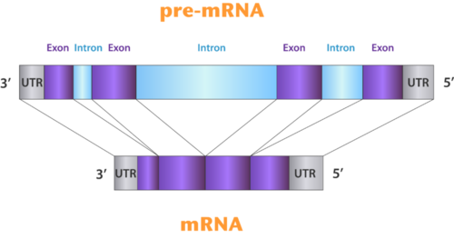
Splicing. Splicing removes introns from mRNA. UTR is an untranslated region of the mRNA.
How is the information in a gene encoded? The answer is the genetic code. The genetic code consists of the sequence of nitrogen bases—A, C, G, T (or U)—in a polynucleotide chain. The four bases make up the “letters” of the genetic code. The letters are combined in groups of three to form code “words,” called codons . Each codon stands for (encodes) one amino acid, unless it codes for a start or stop signal. There are 20 common amino acids in proteins. There are 64 possible codons, more than enough to code for the 20 amino acids. The genetic code is shown in Figure below . To see how scientists cracked the genetic code, go to this link: http://www.dnalc.org/view/16494-Animation-22-DNA-words-are-three-letters-long-.html .
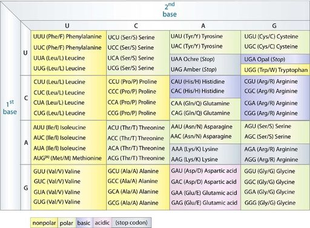
The Genetic Code. To find the amino acid for a particular codon, find the cell in the table for the first and second bases of the codon. Then, within that cell, find the codon with the correct third base. For example CUG codes for leucine, AAG codes for lysine, and GGG codes for glycine.
As shown in Figure above , the codon AUG codes for the amino acid methionine. This codon is also the start codon that begins translation. The start codon establishes the reading frame of mRNA. The reading frame is the way the letters are divided into codons. After the AUG start codon, the next three letters are read as the second codon. The next three letters after that are read as the third codon, and so on. This is illustrated in Figure below . The mRNA molecule is read, codon by codon, until a stop codon is reached. UAG, UGA, and UAA are all stop codons. They do not code for any amino acids.
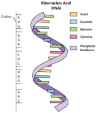
Reading the Genetic Code. The genetic code is read three bases at a time. Codons are the code words of the genetic code. Which amino acid does codon 2 in the drawing stand for?
The genetic code has a number of important characteristics.
Translation is the second part of the central dogma of molecular biology: RNA → Protein . It is the process in which the genetic code in mRNA is read to make a protein. Figure below shows how this happens. After mRNA leaves the nucleus, it moves to a ribosome, which consists of rRNA and proteins. The ribosome reads the sequence of codons in mRNA. Molecules of tRNA bring amino acids to the ribosome in the correct sequence. To understand the role of tRNA, you need to know more about its structure. Each tRNA molecule has an anticodon for the amino acid it carries. An anticodon is complementary to the codon for an amino acid. For example, the amino acid lysine has the codon AAG, so the anticodon is UUC. Therefore, lysine would be carried by a tRNA molecule with the anticodon UUC. Wherever the codon AAG appears in mRNA, a UUC anticodon of tRNA temporarily binds. While bound to mRNA, tRNA gives up its amino acid. Bonds form between the amino acids as they are brought one by one to the ribosome, forming a polypeptide chain. The chain of amino acids keeps growing until a stop codon is reached. To see how this happens, go the link below. http://www.youtube.com/watch?v=B6O6uRb1D38&feature=related (1:29)
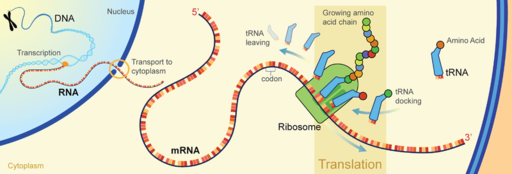
Translation. Translation of the codons in mRNA to a chain of amino acids occurs at a ribosome. Find the different types of RNA in the diagram. What are their roles in translation?
After a polypeptide chain is synthesized, it may undergo additional processes. For example, it may assume a folded shape due to interactions among its amino acids. It may also bind with other polypeptides or with different types of molecules, such as lipids or carbohydrates. Many proteins travel to the Golgi apparatus to be modified for the specific job they will do. You can see how this occurs by watching the animation at this link: http://vcell.ndsu.edu/animations/proteinmodification/movie-flash.htm .
1. Describe transcription.
2. How may mRNA be modified before it leaves the nucleus?
3. What is the genetic code? What are codons?
4. Outline the steps of translation.
5. Use the genetic code in Figure above to translate the following segment of RNA into a sequence of five amino acids:
GUC-GCG-CAU-AGC-AAG
6. The genetic code is universal, unambiguous, and redundant. Explain what this means and why it is important.
7. How are transcription and translation related to the central dogma of molecular biology?
When DNA is replicated or transcribed, accidents can happen, leading to a change in the base sequence.
A change in the sequence of bases in DNA or RNA is called a mutation . Does the word mutation make you think of science fiction and bug-eyed monsters? Think again. Everyone has mutations. In fact, most people have dozens or even hundreds of mutations in their DNA. Mutations are essential for evolution to occur. They are the ultimate source of all new genetic material in a species. Although most mutations have no effect on the organisms in which they occur, some mutations are beneficial. Even harmful mutations rarely cause drastic changes in organisms.
Mutations have many possible causes. Some mutations seem to happen spontaneously without any outside influence. They occur when mistakes are made during DNA replication or transcription. Other mutations are caused by environmental factors. Anything in the environment that can cause a mutation is known as a mutagen . Examples of mutagens are pictured in Figure below . For a video about mutagens, go the link below. http://www.youtube.com/watch?v=0wrNxCGKCws&feature=related (0:36)
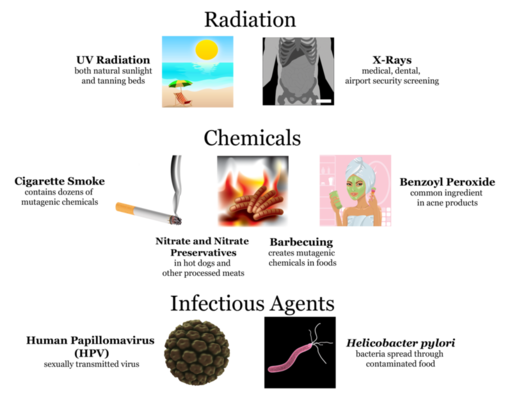
Examples of Mutagens. Types of mutagens include radiation, chemicals, and infectious agents. Do you know of other examples of each type of mutagen shown here?
There are a variety of types of mutations. Two major categories of mutations are germline mutations and somatic mutations.
Mutations also differ in the way that the genetic material is changed. Mutations may change the structure of a chromosome or just change a single nucleotide.
Chromosomal alterations are mutations that change chromosome structure. They occur when a section of a chromosome breaks off and rejoins incorrectly or does not rejoin at all. Possible ways these mutations can occur are illustrated in Figure below . Go to this link for a video about chromosomal alterations: http://www.youtube.com/watch?v=OrXRSqa_3lU&feature=related (2:18).
Chromosomal Alterations. Chromosomal alterations are major changes in the genetic material.
Chromosomal alterations are very serious. They often result in the death of the organism in which they occur. If the organism survives, it may be affected in multiple ways. An example of a human chromosomal alteration is the mutation that causes Down Syndrome. It is a duplication mutation that leads to developmental delays and other abnormalities.
A point mutation is a change in a single nucleotide in DNA. This type of mutation is usually less serious than a chromosomal alteration. An example of a point mutation is a mutation that changes the codon UUU to the codon UCU. Point mutations can be silent, missense, or nonsense mutations, as shown in Table below . The effects of point mutations depend on how they change the genetic code. You can watch an animation about nonsense mutations at this link: http://www.biostudio.com/d_%20Nonsense%20Suppression%20I%20Nonsense%20Mutation.htm .
| Type | Description | Example | Effect |
|---|---|---|---|
| Silent | mutated codon codes for the same amino acid | CAA (glutamine) → CAG (glutamine) | none |
| Missense | mutated codon codes for a different amino acid | CAA (glutamine) → CCA (proline) | variable |
| Nonsense | mutated codon is a premature stop codon | CAA (glutamine) → UAA (stop) usually | serious |
A frameshift mutation is a deletion or insertion of one or more nucleotides that changes the reading frame of the base sequence. Deletions remove nucleotides, and insertions add nucleotides. Consider the following sequence of bases in RNA:
AUG-AAU-ACG-GCU = start-asparagine-threonine-alanine
Now, assume an insertion occurs in this sequence. Let’s say an A nucleotide is inserted after the start codon AUG :
AUG-AAA-UAC-GGC-U = start-lysine-tyrosine-glycine
Even though the rest of the sequence is unchanged, this insertion changes the reading frame and thus all of the codons that follow it. As this example shows, a frameshift mutation can dramatically change how the codons in mRNA are read. This can have a drastic effect on the protein product.
The majority of mutations have neither negative nor positive effects on the organism in which they occur. These mutations are called neutral mutations. Examples include silent point mutations. They are neutral because they do not change the amino acids in the proteins they encode. Many other mutations have no effect on the organism because they are repaired before protein synthesis occurs. Cells have multiple repair mechanisms to fix mutations in DNA. One way DNA can be repaired is illustrated in Figure below . If a cell’s DNA is permanently damaged and cannot be repaired, the cell is likely to be prevented from dividing.
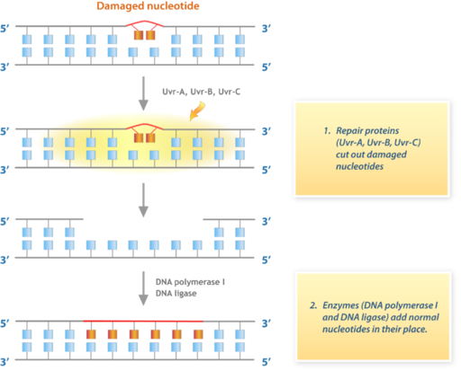
DNA Repair Pathway. This flow chart shows one way that damaged DNA is repaired in E. coli bacteria.
Some mutations have a positive effect on the organism in which they occur. They are called beneficial mutations. They lead to new versions of proteins that help organisms adapt to changes in their environment. Beneficial mutations are essential for evolution to occur. They increase an organism’s changes of surviving or reproducing, so they are likely to become more common over time. There are several well-known examples of beneficial mutations. Here are just two:
Imagine making a random change in a complicated machine such as a car engine. The chance that the random change would improve the functioning of the car is very small. The change is far more likely to result in a car that does not run well or perhaps does not run at all. By the same token, any random change in a gene's DNA is likely to result in a protein that does not function normally or may not function at all. Such mutations are likely to be harmful. Harmful mutations may cause genetic disorders or cancer.
1. Define mutation and mutagen.
2. List three examples of mutagens.
3. Identify three types of chromosomal alterations.
4. Distinguish among silent, missense, and nonsense point mutations.
5. What is a frameshift mutation? What causes this type of mutation?
6. Assume that a point mutation changes the codon AUU to AUC. Why is this a neutral mutation?
7. Look at the mutation shown below. The base A was inserted following the start codon AUG. Describe how this mutation affects the encoded amino acid sequence.
AUG-GUC-CCU-AAA → AUG-AGU-CCC-UAA-A
8. Compare and contrast germline mutations and somatic mutations.
9. Why are mutations essential for evolution to occur?
Sometimes even drastic mutations do not affect the proteins produced by a particular type of cell. The reason? The genes affected by the mutations are not normally used to make proteins in that type of cell. In all cells, some genes are turned off - they are not transcribed - while other genes are turned on.
Each of your cells has at least 20,000 genes. In fact, all of your cells have the same genes. Do all of your cells make the same proteins? Obviously not. If they did, then all your cells would be alike. Instead, you have cells with different structures and functions. This is because different cells make different proteins. They do this by using, or expressing, different genes. Using a gene to make a protein is called gene expression .
Gene expression is regulated to ensure that the correct proteins are made when and where they are needed. Regulation may occur at any point in the expression of a gene, from the start of transcription to the processing of a protein after translation. The focus in this lesson is the regulation of transcription. As shown in Figure below , transcription is controlled by regulatory proteins . The proteins bind to regions of DNA, called regulatory elements , which are located near promoters. After regulatory proteins bind to regulatory elements, they can interact with RNA polymerase, the enzyme that transcribes DNA to mRNA. Regulatory proteins are typically either activators or repressors.
Other factors may also be involved in the regulation of transcription, but these are typically the key players.
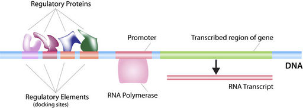
Regulation of Transcription. Regulatory proteins bind to regulatory elements to control transcription. The regulatory elements are embedded within the DNA.
Transcription is regulated differently in prokaryotes and eukaryotes. In general, prokaryotic regulation is simpler than eukaryotic regulation.
Regulation of transcription in prokaryotes typically involves operons. An operon is a region of DNA that consists of one or more genes that encode the proteins needed for a specific function. The operon also includes a promoter and an operator. The operator is a region of the operon where regulatory proteins bind. It is located near the promoter and helps regulate transcription of the operon genes.
A well-known example of operon regulation involves the lac operon in E. coli bacteria (see Figure below and the video at the link below). The lac operon consists of a promoter, an operator, and three genes that encode the enzymes needed to digest lactose, the sugar found in milk. The lac operon is regulated by lactose in the environment. http://www.youtube.com/watch?v=oBwtxdI1zvk
Why might it be beneficial to express genes only when they are needed? (Hint: synthesizing proteins requires energy and materials.)
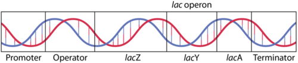
The three genes of the lac operon are lacZ, lacY, and lacA. They encode proteins needed to digest lactose. The genes are expressed only in the presence of lactose.
In eukaryotic cells, the start of transcription is one of the most complicated parts of gene regulation. There may be many regulatory proteins and regulatory elements involved. Regulation may also involve enhancers. Enhancers are distant regions of DNA that can loop back to interact with a gene’s promoter.
Different types of cells have unique patterns of regulatory elements that result in only the necessary genes being transcribed. That’s why a skin cell and nerve cell, for example, are so different from each other. However, some patterns of regulatory elements are common to all genes, regardless of the cells in which they occur. An example is the TATA box . This is a regulatory element that is part of the promoter of most eukaryotic genes. A number of regulatory proteins bind to the TATA box, forming a multi-protein complex. It is only when all of the appropriate proteins are bound to the TATA box that RNA polymerase recognizes the complex and binds to the promoter. Once RNA polymerase binds, transcription begins. To see a video showing the role of the TATA box in the initiation of transcription, go to this link: http://www.youtube.com/watch?v=6tqPsI-9aQA&feature=related .
The regulation of gene expression is extremely important during the development of an organism. Regulatory proteins must turn on certain genes in particular cells at just the right time so the organism develops normal organs and organ systems. Homeobox genes are an example of genes that regulate development. They code for regulatory proteins that switch on whole series of major developmental genes. In insects, homeobox genes called hox genes ensure that body parts such as limbs develop in the correct place. Figure below shows how a mutation in a hox gene can affect an insect’s development. You can learn more about homeobox genes at this link: http://www.youtube.com/watch?v=LFG-aLidT8s .
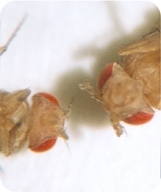
Effect of Hox Gene Mutation. Scientists caused a mutation in a hox gene of this fruit fly. As a result of the mutation, a leg grew out of its head where an antenna should have developed (fly on right). Normal fly (fly on right).
The mutations that cause cancer generally occur in two types of regulatory genes: tumor-suppressor genes and proto-oncogenes (see Figure below ). These genes produce regulatory proteins that control the cell cycle. When the genes mutate, cells with mutations divide rapidly and without limits.
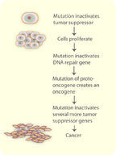
How Cancer Develops. This flow chart shows how a series of mutations in tumor-suppressor genes and proto-oncogenes leads to cancer.
1. What is gene expression?
2. Describe how regulatory proteins regulate gene expression.
3. Identify the TATA box and its function in transcription.
4. What is a homeobox gene?
5. Draw a diagram to show how the lac operon is regulated.
6. Sketch how an insect with a mutated hox gene might look. Explain your sketch.
7. Why is gene regulation especially important during development?
Scientists know more about human chromosomes and genes than they know about the genetic material of most other species. In fact, scientists have identified all of the approximately 20,000-25,000 genes in human DNA.
Opening image copyright by 4designerart, 2010. http://www.shutterstock.com . Used under license from Shutterstock.com.
{kind=link}
{kind=link}
{kind=link}